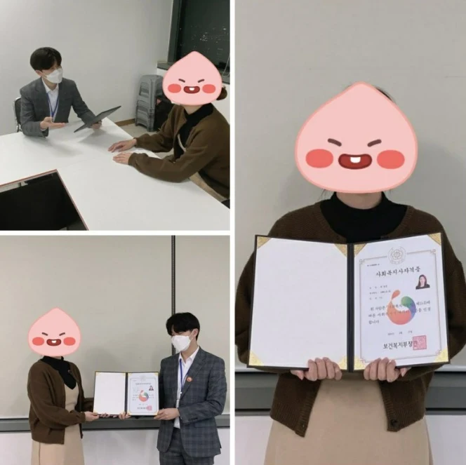
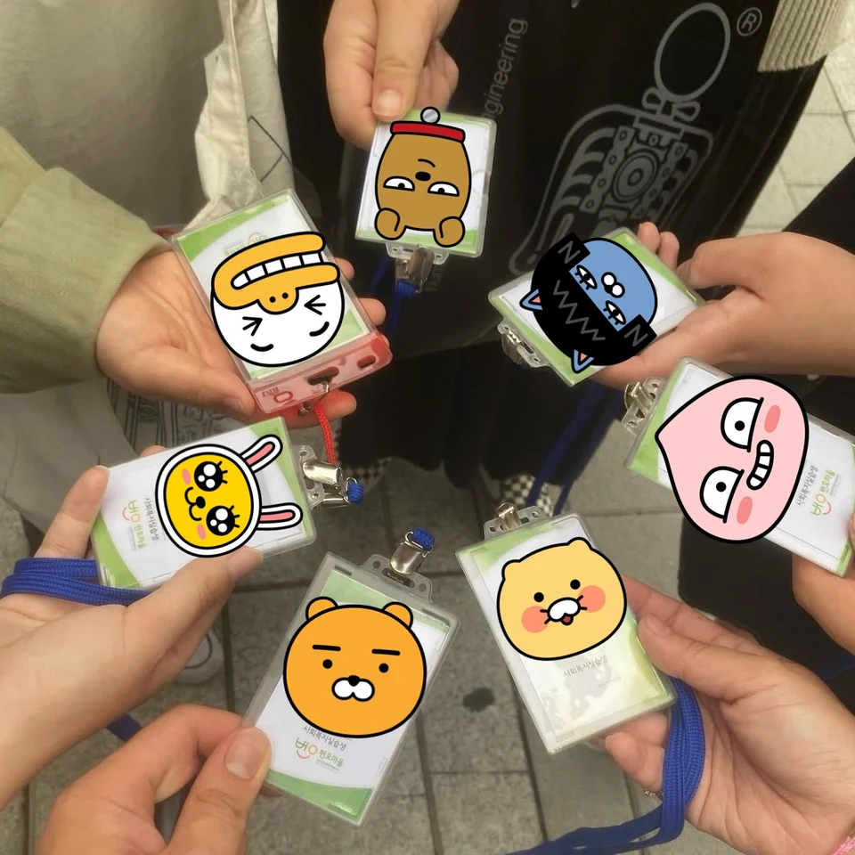
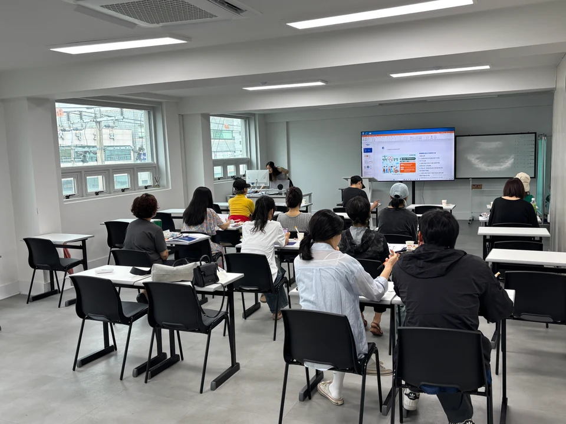

노인 복지
어르신의 일상과 돌봄 지원
- 노인복지관
- 주야간보호센터·요양시설
얼마나 들고, 얼마나 걸릴지 궁금하셨죠? 내 학력과 수강 경험에 맞는 예상 비용과 준비 기간을 문자로 편하게 받아보세요.
내 비용·기간 알아보기당근 채팅으로 안내받은 분을 위한 비용·기간 확인 페이지


노인부터 아동·청소년, 여성과 가족까지.
관심 있는 분야에서 내 다음 일을 그려보세요.
어르신의 일상과 돌봄 지원
아이들의 성장과 돌봄 지원
청소년의 보호와 자립 지원
안전한 생활과 자립 지원
일상과 사회 참여 지원
이웃에게 필요한 복지 연결
사회복지사 자격증 1개만 따도
모든 분야에 취업이 가능합니다.
위에 소개한 복지 분야의 진출 가능성을 뜻하며, 실제 채용은 기관·직무별 자격 등급·경력·추가 교육 등의 요건을 충족해야 합니다.
공부를 다시 시작하는 게 낯설어도,
나이 때문에 망설이고 계셔도.
차근차근 준비할 수 있도록 함께할게요.
이론 강의는 집에서 온라인으로.
휴대폰으로도 수강할 수 있어요.
나이 때문에 포기하지 않으셔도 돼요.
내 학력과 상황에 맞춰 준비해요.
수강 방법부터 학습 일정까지.
담당자가 단계별로 안내해 드려요.
현장실습은 실습기관에서 진행해요. 실습 세미나 등 대면 일정은 별도로 안내해 드립니다.
수업부터 실습, 취업 준비까지.
혼자 걱정하지 않도록 함께합니다.
혼자 알아서
따라가야 할까?
불합격하면 비용을
다시 내야 할까?
이론이 끝나면 실습기관은
혼자 찾아야 할까?
취업 이야기는
어디서부터 해야 할까?
수강 방법부터 학습 일정까지 함께 확인해요.
담당자가 안내해준 학습과정대로 했는데 불합격 됐다면 전액 환급해드려요.
가까운 실습기관을 찾는 과정도 함께해요.
여성인력개발센터 정식 협약
한평생은 실제 여성인력개발센터와 정식 협약을 맺고 자격증 취득 후 취업 연계를 지원합니다.
내 상황에 맞는 준비 방법부터
확인해 보세요.
선택한 조건을 바탕으로
세 가지를 함께 정리해 드려요.
최종학력과 관련 과목 수강 경험을 기준으로, 대략적인 수강료 범위를 안내해 드려요.
내 학력과 수강 경험을 바탕으로 준비에 필요한 예상 기간을 안내해 드려요. 수강 시작 시점과 실습 등 확인이 필요한 일정도 함께 짚어드려요.
실습비 등 별도 비용과 이미 이수한 과목, 앞으로의 수강·실습 일정처럼 정확한 비용·기간 안내에 필요한 사항을 정리해 드려요.
비용과 준비 기간은 예상 범위이며, 실제 이수 내역과 선택 과정, 수강·실습 일정 등을 확인한 뒤 달라질 수 있습니다.
이론 수업은 온라인으로 진행하므로 학원에 정기적으로 방문하지 않고 집에서도 들을 수 있어요. PC뿐 아니라 휴대폰으로도 강의를 수강할 수 있습니다. 다만 현장실습은 실습기관에서 진행하며, 실습 세미나 등 대면 일정은 별도로 안내해 드려요.
네, 60대도 준비하실 수 있어요. 자격 취득 준비에는 별도의 연령 상한이 없으며, 필요한 학력과 과목 이수·실습 요건을 충족하면 됩니다. 공부가 오랜만이라 걱정되셔도 1:1 담당자가 준비 순서와 학습 일정을 차근차근 안내해 드려요.
네, 검정고시 고등학교 졸업자도 가능해요. 검정고시 출신이라는 이유로 수강이나 자격 취득에 불이익은 없습니다.
고졸 학력에 맞춘 과정을 끝까지 이수하고 필요한 학점 등 학위 요건을 충족하면, 사회복지사 자격증과 함께 사회복지 전공 학위도 취득할 수 있어요.
혼자 알아보고 진행하실 필요 없어요. 1:1 담당자가 수강 방법과 학습 일정을 안내하고, 진행 중 궁금한 점도 확인해 드립니다. 처음 시작하는 분도 따라갈 수 있도록 단계별로 도와드려요.
아니요. 예상 비용과 준비 기간을 안내받는 단계이며, 수강 신청이나 결제가 진행되지 않습니다. 내용을 확인한 후 준비 여부를 결정하시면 됩니다.
최종학력과 이미 이수한 과목, 수강 시작 시점과 실습 일정 등을 확인해 예상 준비 기간을 안내해 드려요. 처음에는 선택한 조건을 기준으로 안내하고, 추가로 확인이 필요한 내용도 함께 알려드립니다.
선택하신 정보를 바탕으로 안내하는 예상 범위입니다. 실제 이수 내역과 과정, 수강·실습 일정 등을 확인하면서 달라질 수 있어요. 안내받은 기간은 준비 계획을 위한 참고이며, 자격증 발급 시점이 확정된 것은 아닙니다.
네. 한평생원격교육원은 여성인력개발센터와 정식 협약을 맺고 취업 연계를 지원합니다. 취업 연계의 자세한 내용은 담당자에게 안내받으실 수 있어요.
‘잘 모르겠어요’를 선택하시면 됩니다. 정확한 확인을 위해 이수 내역이 필요한 경우, 안내 문자에서 추가로 확인할 사항을 알려드려요.
다시 일을 시작하고 싶은 마음도,
새로운 내일을 준비하는 마음도 함께했어요.



아이들을 키우느라 오랫동안 일을 쉬어 재취업이 가능할지 걱정이 많았습니다. 나이도 있고 경력 공백도 길어서 자신감이 많이 떨어진 상태였는데, 사회복지사 자격증을 취득한 후 관련 분야로 취업까지 하게 되었어요. 그동안의 고민이 무색할 만큼 새로운 시작을 할 수 있었습니다.
요즘은 다들 너무 건강해요~ 정년퇴직 후 앞으로 어떻게 시간을 보내야 할지 고민이 많았습니다. 단순히 쉬기보다는 보람 있는 일을 하고 싶어 사회복지사 자격증에 도전했어요. 나이 때문에 걱정도 했지만 취득 후 관련 시설에 취업까지 하게 되면서 제2의 인생을 시작한 기분입니다.
퇴직이 가까워지면서 앞으로 무엇을 해야 할지 고민이 많았습니다. 사회복지 분야에 관심은 있었지만 나이가 많아 시작하기 망설여졌는데, 생각보다 많은 분들이 비슷한 상황에서 준비하고 계시더라고요. 덕분에 용기를 내어 시작했고 만족스러운 결과를 얻었습니다.
아이를 키우면서 일을 하고 있어 시간을 내기가 쉽지 않았습니다. 그래서 계속 미루고 있었는데, 온라인으로 진행할 수 있어 부담이 적었고 일정 관리도 도움을 받아 끝까지 완주할 수 있었습니다. 저처럼 시간이 부족한 분들에게 큰 도움이 될 것 같아요.
50대 후반이 되니 노후 준비에 대한 고민이 많아졌습니다. 혼자 시작하기엔 망설여졌는데 친구와 함께 도전하자는 이야기가 나와 용기를 냈어요. 서로 응원하며 공부하다 보니 어느새 둘 다 사회복지사 자격증을 취득하게 되었고, 지금은 관련 분야 취업도 준비하고 있습니다.
옆으로 넘겨 더 많은 후기를 읽어보세요.
‘나도 할 수 있을까?’ 하는 마음,
그 작은 관심부터 시작해도 괜찮아요.
지금 모든 걸 결정하지 않아도 돼요.
내 상황에 맞는 비용과 준비 기간부터
차근차근 알아보세요.
당신의 첫걸음을 한평생원격교육원이 응원합니다.
학력과 관련 과목 수강 경험을 알려주세요.
성함과 휴대폰 번호를 남겨주세요.
예상 예산과 준비 기간을 확인하고, 시작 계획을 생각해 보세요.
지금까지의 준비 상황만 알려주세요.
선택한 조건에 맞는 예상 비용과
준비 기간을 함께 안내해 드릴게요.
내 조건에 맞는비용과 준비 기간
비용·기간 확인